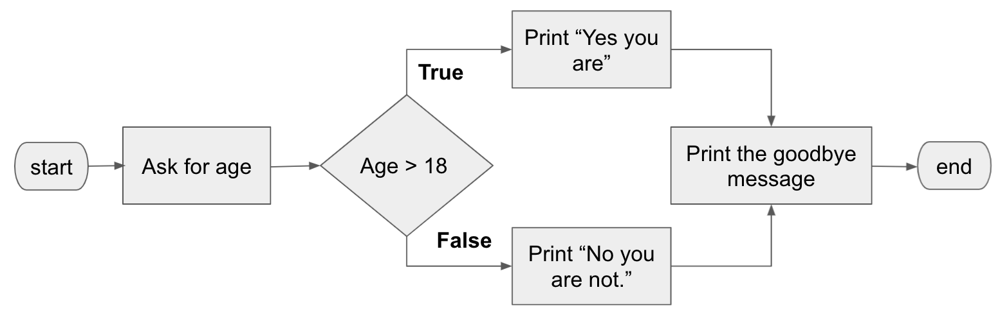
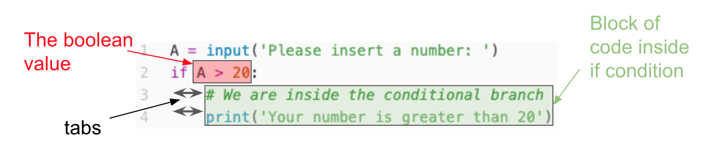
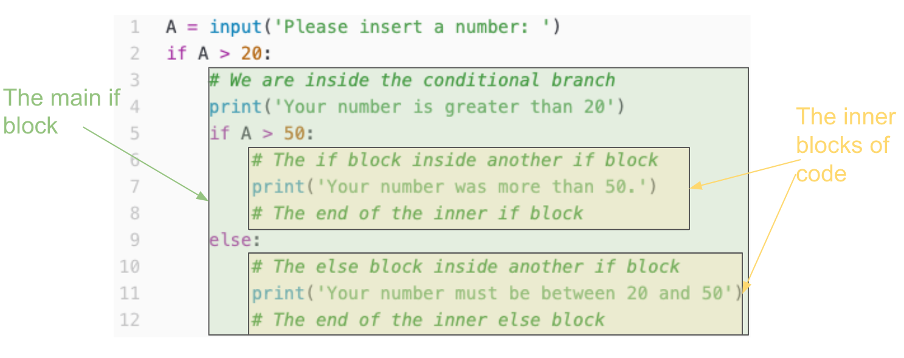
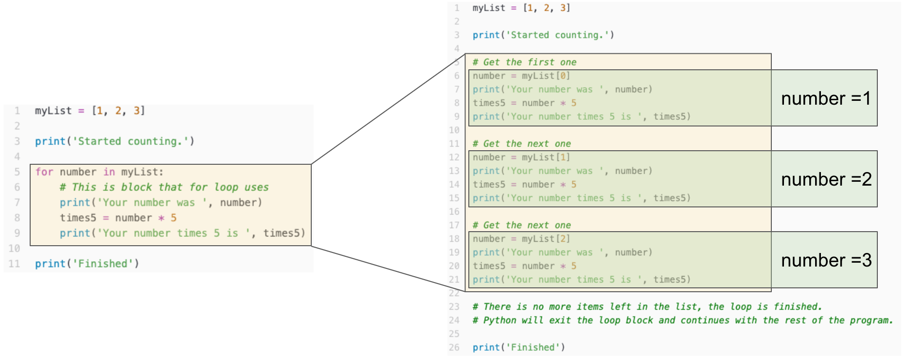

Branches
Often in a program it happens that the flow of your program depends on certain conditions. This is where branches come in.

Branches are also known as the if-else conditions, because that's literally what happens in branching: A branch is a point in a program where there is a decision to make, based on which the flow of the program will be determined.
Imagine a program that asks for your age and then tells you how old you are (not very useful, I know, but bare will me a bit). The code for such program will be something like this:
# A program that tells you how old you are, but asks you that first.
age = input('How old are you? ')
print('You are ' + age + ' years olds.')
print('Have a nice day. Bye!')Python will read your program line by line and executes each line. So, this is how your program flow look likes:

Change of flow
Now let's turn this into a program that does something slightly more useful: It asks your age, and then it tells you if you are eligible to vote (let's assume the legal age for voting is 18). Obviously we need something that has two separate paths. One of them tells you "Yes, you are" if the age you typed in is more than 18, and the other one that tells you "No, you aren't" otherwise.
As you can see in the image above there are two flows for the program. Here is where the conditional statements come in. Conditional statemenet depend on an statement being True or False. In Python, as in other porgramming languages, we use the methematical equality and inequality signs to make these statemenets. The proper way to read the mathematical expressions made from the above is through using them with this table.
| Symbol | Meaning |
|---|---|
| == | Equal |
| != | NOT Equal |
| > | Greater than |
| >= | Greater than or equal |
| < | Less than |
| <= | Less than or equal |
For example, we read 7 > 32 like this: "7 is greater than 32". Obviously, this is not correct, whic mean that this statement is False. Try this in Python as see if it agrees:
# Logical statements in Python
print(7 > 32)Boolean
Remember the variables that we introdued before? There is another VERY important variable type called boolean. Booleans can only take two values False or True.
# Boolean values
BooleanValue = True
print(BooleanValue)As you may imagine there is not much appeal in having boolean variables on their own. But their importance becomse clear when we go back to the conditional statements that we talked about. In fact, what changes the flow of a program is often a boolean variable being False or True. Try to see if you can figure out what this code will print:
B1 = 7 > 9
print(B1)
print(4 != 6)
# Remember the use of brackets from the last lession?
B2 = (7 - (5 * 2)) == ((5 * 3) - 4)
print(B2)
B3 = "Something" == "something"
print(B3)
If condition
Now it is time to introduce one of our most important concepts in programming: if blocks. Using keyword if in Python, you will tell your program to run a piece of your program only if a condition is true. Here is where we use the power of boolean variables. Python will look at the boolean variables (or an statement that can have a boolean value) and if it was True, it will run the block of code after the if. Otherwise it will ignore the block of code, and continues with the code afetr that block.
What is a block of code?
A block of code, is any piece of program. It can be a single line of code or a few thousand lines. Having separate blocks of code, helps us tell python to run a block or not, depending on a boolean value. The first block of code that we are going to work with here is the block of code that belongs to an if branch. This is how we use the if condition and its block in Python (notice the : after the boolean condition, we always need that):
Here we have a boolean statement, that can be True or False, in front of an if. This is the A > 20. Then, right after that there are two lines of code that have tab space in front of them. All this area with tab in front of it is what we call the if block. Python will run this code if and only if during running the program the boolean condition in front of if was True, otherwise it completely ignore it. Knowing this try to predict what happens when we run this program.
It happens a lot in programming that we want to run a block of code if something was true, and another block of code otherwise. We can have this with 2 separate if blocks that have the opposite if each other. But, because this is very common, programming langauges already have something for use. All we need to do is adding else right after our if block finishes, and adding a block of code.
# if block with else condition
a = input('Insert a number: ')
num = int(a)
if a > 20:
# This is the block of code that will run if the boolean condition was True
print('Your number was more than 20')
else:
# This is the block of code that will run if the boolean condition was False
print('Your number was not more than 20')
Multiple conditions
It may also happen that you need to check something for multiple conditions. For example, if you want to check if number is between 1-5, or 6-10, or 11-20, etc. This may need manye if else branches, or a shorter way in Python is using elif, which is short of else if. You can have as many elifs that you want afetr an if condition to check for various other things that may happen. Remember that each of those need a block of code for its own flow. Example:# if block with else condition
a = input('Insert a number: ')
num = int(a)
if a > 30:
print('Your number was more than 30')
elif a > 20:
print('Your number was more than 20')
elif a > 10:
print('Your number was more than 10')
else:
print('Your number was less than 10')
# What is the output
num = 45
if a > 10:
print('Your number was more than 10')
elif a > 20:
print('Your number was more than 20')
elif a > 30:
print('Your number was more than 30')
Blocks inside blocks
So far we have been checking a single condition. But what if our we want to check another condition inside a block? You can always have a block inside another block. All you need is an extra tab. Complex conditions
If you have tried the roller coaster excersise, you may done it with two blocks (one inside the other). But thinking about it logically the only thing that you needed to do was to check if the age was more than 10 AND the height was more than 40. Checking multiple conditions like that is very common in programming. That's why all the programming languages have AND, OR operations beween booleans. Using these two opraions beween two boolean variable works exactly as they read. In Python we use and for AND between two booleans, and or for OR between two booleans
# Operation between booleans
# Check how here we use comments after the main Python command.
# Anything that we add after the # will be ignored by Python
b1 = 45 > 3 # This is True
b2 = "NP" == "New Providence" # This is False
print(b1 and b2) # will print False, because only one of them is True
print(b1 or b2) # will print False, because one of them is true
In the beginning it may be confusing to know what is the resutls when we have and, or between two booleans. This table is good guide.
| A | B | A and B | A or B |
|---|---|---|---|
| False | False | False | False |
| True | False | False | True |
| False | True | False | True |
| True | True | True | True |
Now we can easily write our roller coaster check program like this:
# Roller coaster
# Notice the use of one function inside the other
# This puts the output from one function directly inside the other
age = int(input('What is your age? '))
height = int(input('What is your height in inches? '))
# See the use of brackets, remember how we used them in the previous lesson
if (age > 10) and (height > 40):
print('Enjoy the roller coaster')
else:
print('Sorry you can not ride')
As you see in the above example, the brackets around the boolean variables act in the exact same way as they do in arithmetic ones. So, if there is a complex condition, feel free to use brackets as needed to make sure you get the right combination. As a practice, see if you can predict the outcomes printed out from this code.
# What do you think the output is?
bv1 = (67 > 45) and ("this" != "that")
bv2 = (((5 * 7) - 45) > 13) or bv1
print(bv1, bv2)
- GPA > 3.5
- ACT > 25 or SAT > 1200
Loops
We just saw how if blocks are working. They run a block of code once, if some boolean statement/variable was true. But what if there is a block of code that we want to run more than one time? This is in fact a very common thing to have in any program. Loops are what we use in programming to repeat a block of code multiple times. There are many ways to create a loop in a program. Here we focus on while and for loops.
while loop
A while loop in many ways resembles an if conditions. The only difference is that Python runs the if block only once if the condition is true. But in a while loop the loop block keeps repeating as long as the conditions is true. See if you can figure out what this while loop doesn.
# A while loop
my_number = 1
while 4 > my_number:
print(my_number)
my_number = my_number + 1
What do you think will happen if you run this program? Run it on your own risk.
# A while loop
my_number = 1
while 4 > my_number:
print(my_number)
Here is another example of a program that uses while loop. Here when the loop ends depends on the input to program. It may take many tries. But still there exist a condition out of it. So, we do NOT call this one an infinite loop.
# Guessing game
my_number = 43
your_guess = int(input('Guess my number [1-100]: '))
while your_guess != my_number:
print('You guessed wrong! Try again.')
# See how we give a new value to the variable your_guess every time.
your_guess = int(input('Guess my number [1-100]: '))
print('Congratulations, you guessed right. The number was ', my_number)
for loop
Another very common loop is the for. We doing something with all the elements in a list (remember the lists from the last class?). For loop receives a list (to be more accurate an iterable, but don't worry about that, we will be working mostly with lists for now) and runs the block with each of the element in that list one by one. For loops have a variable that will be updated everytime that the loop block runs. The following images illustartes how this works.
range function
Time for new python function: A very useful function that is regularly used with a for loop is the range. For this class we try using it only with a for loop. It helps you to generate the list of numbers you need, so you don't have to type them all. If you use it with a for loop, it can replace your list of numbers. For example instead of [1, 2, 3, 4, 5, 6], you may use range(1, 7). This will give you the list of numbers from 1 up to (but not including) 7. You can even give a third argument, that will be the increments, defaulat was 1 as you saw before. See following examples for better understanding:
# For loops with range
# This will print numbers from 1 to 100
for i in range(1, 101):
print(i)
# This will print numbers from 5 to 100, with increments of 5
# That is 5, 10, 15, ..., 100
for i in range(5, 101, 5):
print(i)
Break and continue
break and continue are two keyword to control the flow of the loops. It works both in while and for loops.
Break
If Python reaches the break keyword in a loop it exits that loop altogether. That's why the call it break, because it breaks the loop.
# Using break inside the loop.
for i in [2, 3, 4]:
if i == 3:
break # this breaks the loop and goes to the code after the loop
print(i)
Continue
If Python reaches the continue keyword in a loop it goes to the top of the loop's block. Try to predict the output of the following code.
# Using continue inside the loop.
for i in [2, 3, 4]:
if i == 3:
continue # this tells Python to go to the top of the loop's block
print(i)
Find the smallest number after 1000 that can be divided by 23.
Hint 1: check numbers larger than 100 to see which one is the first one that can be divided by 17.
Hint 2: there is a useful Python operation you can use here. % finds the remained between two integers. For example 12 % 5 will be 2, because the remainer of dividing 12 by 5 is 2.
Functions
We have seen and used many functions so far. It's time to see how functions are built, and make some of our own. As it was the theme in this lesson, function are (again) a block of code that can run it from anywhere in our code. We use functions to avoid rewriting the same piece of code over and over. To do that, we put a block of code inside a function, name that function something, and everytime wanted to used it we just simply call that function by its name. We use the Python keyword def to define our own functions. After def we write the name of the function (the same rules for naming a variable) and then add () in front of it to say this is a function (we talk about the brackets more soon). To call the function, just use its name with () in front of it. Example:
# Define a function
# Defining my function
def MyFunction():
print('This is from my function')
# Running my function
MyFunction()
Arguments
It is really boring to have a function that only does one thing (a one trick function). Remember the functions we used so far were all receiving some variables that could change what they were doing (range(4, 6) and range(9, 20) do different things). We call the variables the arguments to our function (also sometimes called parameters). If you want a function that receives arguments and uses them for its process, all you need to do is to add some variables inside the () that you had during the function definition. When you call the function with variables, Python will replace them with the arguments of your function in the same order. See the example below:
# Define a function WITH arguments
# Defining my function
def TwoNumberFunction(a, b):
print('Your first argument was', a)
print('Your second argument was', b)
# Running my function
TwoNumberFunction(54, "Library")
Returned values
Functions we used so far receive arguments and print something on the screen. We often use function to run some code and then give us some answer. Or technically speaking return a value. (remember how range function returns something that we use as a list). See how the following function returns the results of multiplying two numbers.
# Multiply function
# Defining the function
def Multiply(a, b):
return a * b
# Usingt the function
r = Multiply(4, 6)
print(r)
When a function reaches the return line in its code, it returns from that function and does not continue from that point one. Can you tell the output of this program?
def MyFunc(a, b):
c = a + b
return c
c = 7
return c
r = MyFunc(4, 6)
print(r)